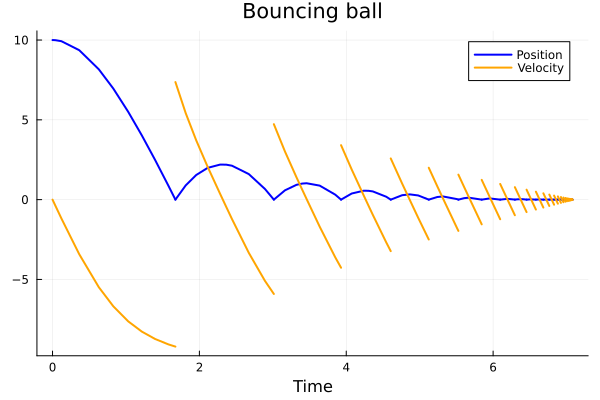

A General Example
A general system consists of the data $(f, h, \Delta)$ where
\[ \begin{cases} \dot{x} = f(x, t), & h(x) \ne 0, \\ x^+ = \Delta(x), & h(x) = 0. \end{cases}\]
\[ \begin{cases} \ddot{x} = -g -\alpha\cdot \dot{x} \cdot|\dot{x}|, & x > 0 \\[1ex] \dot{x}^+ = -e\dot{x}^-, & x = 0 \end{cases}\]
import HybridDynamics as HD
import Plots as plt
using LaTeXStringsfunction f_ball(x, t)
g = 9.81
α = 0.1
q, v = x
return [v, -g-α*v*abs(v)]
end
h_ball(x) = x[1]
Δ_ball(x) = [abs(x[1]), -0.8*x[2]]
sysG = HD.GeneralSystem(f_ball, h_ball, Δ_ball; direction=-1)
probG = HD.prob(sysG, [10.0, 0.0], (0.0, 15.0))
solG = HD.solve(probG)HybridDynamics.GeneralSol{Vector{Float64}, Vector{Vector{Float64}}, Vector{Vector{Float64}}}([0.0, 0.001, 0.004, 0.013000000000000001, 0.04000000000000001, 0.12100000000000002, 0.3640000000000001, 0.6303641710352871, 0.8275963195623833, 1.0306003579367238 … 7.078251636168441, 7.078251636168441, 7.0797452737890225, 7.0805602185133045, 7.0805602185133045, 7.082240560836459, 7.082394811712528, 7.082394811712528, 7.082394811712528, 7.082394811712528], [[10.0, 0.0], [9.999995095000802, -0.009809996792131256], [9.999921520205303, -0.039239794697608577], [9.999171077903974, -0.1275229527768522], [9.99215405217144, -0.39219482511185977], [9.928357143635973, -1.1813595166421051], [9.363713554758974, -3.42376827649627], [8.165797575977917, -5.488579993863838], [6.960595306856689, -6.6846293568921995], [5.503168011201534, -7.62826515168349] … [2.9169074989798103e-7, -0.014091962103409867], [2.9169074989798103e-7, 0.011273569682727894], [6.187486504411727e-6, -0.0033790201975227546], [1.7619144976867637e-7, -0.011373623074556881], [1.7619144976867637e-7, 0.009098898459645505], [1.6159379954144851e-6, -0.007385260933220877], [3.6004880343951083e-7, -0.008898461001991773], [3.6004880343951083e-7, 0.0071187688015934185], [3.6004880343951083e-7, 0.0071187688015934185], [3.6004880343951083e-7, -0.005695015041274735]], [[0.0, -9.81], [-0.009809996792131256, -9.809990376396295], [-0.039239794697608577, -9.80984602385121], [-0.1275229527768522, -9.808373789651508], [-0.39219482511185977, -9.794618321915548], [-1.1813595166421051, -9.670438969243914], [-3.42376827649627, -8.637781078885777], [-5.488579993863838, -6.797548965095764], [-6.6846293568921995, -5.341573036097498], [-7.62826515168349, -3.990957077561127] … [-0.014091962103409867, -9.809980141660407], [0.011273569682727894, -9.81001270933734], [-0.0033790201975227546, -9.80999885822225], [-0.011373623074556881, -9.809987064069816], [0.009098898459645505, -9.81000827899532], [-0.007385260933220877, -9.809994545792096], [-0.008898461001991773, -9.80999208173918], [0.0071187688015934185, -9.810005067686925], [0.0071187688015934185, -9.810005067686925], [-0.005695015041274735, -9.809996756680368]], [1.6734279245513155, 3.0140734516333185, 3.929275789682592, 4.605917381314949, 5.12374504097617, 5.52722269146388, 5.844821155251337, 6.096353201471607, 6.296315620968095, 6.4556443169829985 … 7.046191276780439, 7.054873755626938, 7.061828047176205, 7.067393477225555, 7.07184155060488, 7.075397368354661, 7.078251636168441, 7.0805602185133045, 7.082394811712528, 7.082394811712528], [15, 25, 33, 40, 45, 50, 54, 57, 61, 66 … 112, 117, 121, 126, 129, 132, 135, 138, 141, 143])times, states = HD.split_jumps(solG)
plt.plot(times, getindex.(states, 1), label="Position", lw=2, lc=:blue)
plt.plot!(times, getindex.(states, 2), label="Velocity", lw=2, lc=:orange)
plt.plot!(title = "Bouncing ball", xlabel = "Time", grid = true)